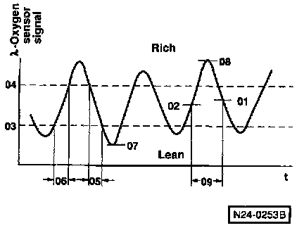
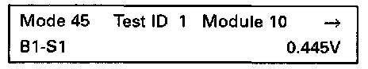
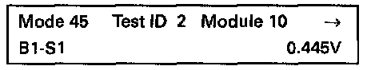
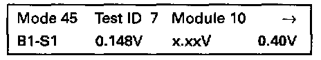
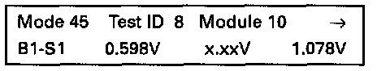

Mode 5: Oxygen Sensor Signal (B1-S1)
NOTE:When a Heated Oxygen Sensor (HO2S) malfunction is stored, use mode 5 to check the HO2S signal output, to see whether the HO2S before three way catalytic converter is within specification, or whether another malfunction is present, e.g. the HO2S after three way catalytic converter is causing an O2S control malfunction.

The points 01 to 09 represent:
01. Rich/lean threshold voltage (constant value)
02. Lean/rich threshold voltage (constant value)
03. Lower voltage for calculating switching period
04. Upper voltage for calculating switching period
05. Calculated rich/lean switching time
06. Calculated lean/rich switching time
07. Minimum test voltage
08. Maximum test voltage
09. Time between threshold voltages
- Press button -5- to select mode 5 oxygen sensor signal (B1-S1).

Display will appear as shown: Test ID 01
Rich/lean threshold voltage: Standard value 0.445 volts.
- Press -> button.

Display will appear as shown: Test ID 02
- Lean/rich threshold voltage: constant value 0.445 volts.
- If constant value is not obtained, the HO2S is faulty.
- Press -> button.
For the following HO2S signals three values are always displayed:
1st value = Minimum value
2nd value = Actual value
3rd value = Maximum value
NOTE:
The displayed Min. and Max. values are constant and do not change. The actual value is displayed as a constant. It will only change when during the test the HO2S supplies a greater or smaller signal.

Display will appear as shown: Test ID 07
- Minimum test voltage.
- If the actual value is below 0.148 volts, there is a short to ground.
- When the actual value exceeds 0.4 volts, the malfunction could be the HO2S is not at working temperature, sensor heating is faulty, wiring open circuit to HO2S or a short circuit to positive (B+).
- Press -> button.

Display will appear as shown: Test ID 08
- Maximum test voltage.
- If the actual value is above 1.078 volts, there is a short circuit to positive (B+)in the wire to HO2S.
- If the actual value is below 0.598 volts, the malfunction could be a HO2S not reaching proper operating temperature, faulty O2S heating or an open circuit in the HO2S wiring.
- Press->button.

Display will appear as shown: Test ID 09
- The display shows the time between the threshold voltages.
- If the actual value is below the minimum time of 0.04 seconds, there is a short circuit.
- If the actual value exceeds the maximum time of 1.20 seconds, the malfunction could be due to an aged, lazy or contaminated oxygen sensor.
- Press -C- button to exit the program sequence.